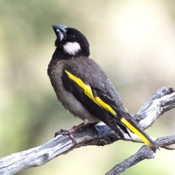

My 5-year schedule
Click here to download my 5-year tour schedule (2024-2028).
Scheduled tours – Calendar
| Dates | Destination | Days | Operator | Details | Spaces | Updated | |
|---|---|---|---|---|---|---|---|
 |
23 Jul – 6 Aug 2023 |
INDIA Lesser Florican and Tibet |
15 | GO-AWAY-BIRDING | Private tour | n/a | 25 Apr |
 |
26 Aug – 13 Sep 2023 |
ANGOLA Comprehensive Tour |
19 | Birding Africa | Brochure | 0/9 | 25 Apr |
 |
15 Sep – 4 Oct 2023 |
GABON with African River Martin |
20 | Birding Africa | Enquire | 1/8 | 25 Apr |
 |
21 Nov – 1 Dec 2023 |
SOMALILAND Specials |
11 | GO-AWAY-BIRDING | Private tour | n/a | 25 Apr |
 |
16 Jan - 31 Jan 2024 |
UPPER GUINEA SPECIAL Liberia and Sierra Leone |
16 | Birding Africa | Brochure | 9/9 | 25 Apr |
|  | 19 Mar – 26Mar 2024 |
SOCOTRA Endemics |
8 | Birding Africa | Brochure | 8/9 | 25 Apr |
 |
1 Jun – 7 Jun 2024 |
RWANDA Highlights Tour |
7 | Birding Africa | Brochure | 2/9 | 25 Apr |
 |
7 Jun – 17 Jun 2024 |
UGANDA Highlights Tour |
11 | Birding Africa | Brochure | 3/9 | 25 Apr |
 |
17 Jun – 22 Jun 2024 |
UGANDA Northern Tour |
3/9 | Birding Africa | Brochure | yes | 25 Apr |
 |
26 Jun - 3 Jul 2024 |
SAO TOME E PRINCIPE Endemics |
8 | Birding Africa | Brochure | 4/9 | 25 Apr |
|
21 Aug – 8 Sep 2024 |
ANGOLA Comprehensive Tour |
19 | Birding Africa | Brochure | 0/9 | 25 Apr |
 |
2 Oct – 15 Oct 2024 |
MALAWI 'Best of' Tour |
14 | Birding Africa | Brochure | 0/9 | 25 Apr |
 |
16 Nov – 28 Nov 2024 |
ZAMBIA Main Tour |
13 | Birding Africa | Brochure | 3/9 | 25 Apr |
 |
28 Nov – 5 Dec 2024 |
ZAMBIA Pitta Tour |
8 | Birding Africa | Brochure | 2/9 | 25 Apr |
 |
15 Jan – 31 Jan 2025 |
GHANA Comprehensive Tour |
17 | Birding Africa | Brochure | 3/9 | 25 Apr |
|
4 Feb – 19 Feb 2025 |
UPPER GUINEA SPECIAL Liberia and Sierra Leone |
16 | Birding Africa | Brochure | 6/9 | 25 Apr |
|
4 Apr – 15 Apr 2025 |
SOMALILAND Specials |
12 | Birding Africa | Coming | 9/9 | 25 Apr |
 |
18 Apr – 28 Apr 2025 |
KENYA Eastern Tour |
11 | Birding Africa | Brochure | 6/9 | 25 Apr |
 |
28 Apr – 10 May 2025 |
KENYA Main Tour |
13 | Birding Africa | Brochure | 4/9 | 25 Apr |
|
28 Aug – 15 Sep 2025 |
ANGOLA Comprehensive Tour |
19 | Birding Africa | Brochure | 8/9 | 25 Apr |
|
17 Sep – 6 Oct 2025 |
GABON with African River Martin |
20 | Birding Africa | Brochure | 0/9 | 25 Apr |
 |
17 Sep – 6 Oct 2025 |
GAMBIA AND SENEGAL Highlights Tour |
14 | Birding Africa | Coming | yes | 25 Apr |
| 17 Mar – 24 Mar 2026 |
SOCOTRA Endemics |
8 | Birding Africa | Brochure | 9/9 | 25 Apr | |
 |
27 Mar – 12 Apr 2026 |
ETHIOPIA Endemics |
17 | Birding Africa | Coming | 9/9 | 25 Apr |
 |
13 Apr – 16 Apr 2026 |
DJIBOUTI for The Francolin |
4 | Birding Africa | Coming | 9/9 | 25 Apr |
|
27 Aug – 14 Sep 2026 |
ANGOLA Comprehensive Tour |
19 | Birding Africa | Coming | 5/9 | 25 Apr |
|
17 Sep – 6 Oct 2026 |
GABON with African River Martin |
20 | Birding Africa | Coming | 5/9 | 25 Apr |
 |
23 Oct – 31 Oct 2026 |
COMOROS Island endemics |
9 | Birding Africa | Brochure | 6/9 | 25 Apr |
 |
1 Nov – 11 Nov 2026 |
SEYCHELLES, MAURITIUS AND REUNION Island endemics |
11 | Birding Africa | Brochure | 3/9 | 25 Apr |
|
19 Jan – 3 Feb 2027 |
UPPER GUINEA SPECIAL Liberia and Sierra Leone |
16 | Birding Africa | Coming | 9/9 | 25 Apr |
|
24 Aug – 11 Sep 2027 |
ANGOLA Comprehensive Tour |
19 | Birding Africa | Coming | 9/9 | 25 Apr |
|
14 Sep – 3 Oct 2027 |
GABON with African River Martin |
20 | Birding Africa | Coming | 9/9 | 25 Apr |
 |
16 Nov – 21 Nov 2027 |
MADAGASCAR Masoala Peninsula |
6 | Birding Africa | Coming | 9/9 | 25 Apr |
 |
21 Nov – 7 Dec 2027 |
MADAGASCAR Main Tour |
17 | Birding Africa | Coming | 9/9 | 25 Apr |
|
18 Jan – 2 Feb 2028 |
UPPER GUINEA SPECIAL Liberia and Sierra Leone |
16 | Birding Africa | Coming | 9/9 | 25 Apr |
|
1 Apr – 12 Apr 2028 |
SOMALILAND Specials |
12 | Birding Africa | Coming | 9/9 | 25 Apr |
|
30 May – 6 Jun 2028 |
SAO TOME E PRINCIPE Endemics |
8 | Birding Africa | Coming | 9/9 | 25 Apr |
|
9 Jun – 15 Jun 2028 |
RWANDA Highlights Tour |
7 | Birding Africa | Coming | 9/9 | 25 Apr |
|
15 Jun – 25 Jun 2028 |
UGANDA Highlights Tour |
11 | Birding Africa | Coming | 9/9 | 25 Apr |
|
25 Jun – 30 Jun 2028 |
UGANDA Northern Tour |
6 | Birding Africa | Coming | 9/9 | 25 Apr |
|
3 Aug – 11 Aug 2028 |
ANGOLA Comprehensive Tour |
19 | Birding Africa | Coming | 9/9 | 25 Apr |
|
1 Oct – 16 Oct 2028 |
TANAZANIA Remote South Tour |
16 | Birding Africa | Coming | 9/9 | 25 Apr |
 |
15 Oct – 30 Oct 2028 |
TANAZANIA Northern Tour |
16 | Birding Africa | Coming | 9/9 | 25 Apr |
|
15 Mar – 31 Mar 2029 |
GHANA Comprehensive Tour |
17 | Birding Africa | Coming | 9/9 | 25 Apr |
|
3 Apr – 13 Apr 2029 |
KENYA Eastern Tour |
11 | Birding Africa | Coming | 9/9 | 25 Apr |
|
13 Apr – 25 Apr 2029 |
KENYA Main Tour |
13 | Birding Africa | Coming | 9/9 | 25 Apr |
|
24 Aug – 11 Sep 2029 |
ANGOLA Comprehensive Tour |
19 | Birding Africa | Coming | 9/9 | 25 Apr |
|
14 Sep – 3 Oct 2029 |
GABON with African River Martin |
20 | Birding Africa | Coming | 9/9 | 25 Apr |
|
16 Nov – 28 Nov 2029 |
ZAMBIA Main Tour |
13 | Birding Africa | Coming | 9/9 | 25 Apr |
|
28 Nov – 5 Dec 2029 |
ZAMBIA Pitta Tour |
8 | Birding Africa | Coming | 9/9 | 25 Apr |
Scheduled tours – by destination
ALGERIA — none currently
ANGOLA — 26 Aug to 13 Sep 2023 — 21 Aug to 8 Sep 2024 — 28 Aug to 15 Sep 2025 — 27 Aug to 14 Sep 2026 — 24 Aug to 11 Sep 2027 — 3 Aug to 21 Aug 2028 — 24 Aug to 11 Sep 2029 — 20 Aug to 7 Sep 2030 — 20 Aug to 7 Sep 2031 — 20 Aug to 7 Sep 2032 — 20 Aug to 7 Sep 2033
AZORES — inquire
CAMEROON — none due to safety concerns
CANARY ISLANDS — inquire
CAPE VERDE — inquire
COMOROS — 23 to 31 Oct 2026 — 15 to 23 Oct 2032
CONGO — inquire
CHAD — none due to safety concerns
DEMOCRATIC REPUBLIC OF CONGO (DRC) — inquire
DJIBOUTI — 13 to 16 Apr 2026
EGUPT — private tours only
ETHIOPIA — 27 Mar to 12 Apr 2026 — 1 April to 17 April 2031
GABON — 15 Sep to 4 Oct 2023 — 17 Sep to 6 Oct 2025 — 17 Sep to 6 Oct 2026 — 14 Sep to 3 Oct 2027 — 14 Sep to 3 Oct 2029 — 21 Sep to 10 Oct 2031
GAMBIA (with Senegal) — 25 Jan to 7 Feb 2026 — 18 to 31 Jan 2031
GHANA — 15 to 31 Jan 2025 — 15 to 31 Mar 2029
KENYA — 18 Apr to 10 May 2025 — 3 to 25 Apr 2029 — 21 Apr to 13 May 2030
LIBERIA (with Sierra Leone) — 16 to 31 Jan 2024 — 4 to 19 Feb 2025 — 19 Jan to 3 Feb 2027 — 18 Jan to 2 Feb 2028 — 15 to 30 Jan 2030 — 13 to 28 Jan 2032 — 11 to 26 Jan 2033
MADAGASCAR — 16 Nov to 7 Dec 2027 — 16 Nov to 7 Dec 2031
MADEIRA — inquire
MALAWI — 2 to 15 Oct 2024 — 11 to 24 Jun 2032
MAURITIUS — 1 to 20 Nov 2026 — 15 Oct to 3 Nov 2032
MOROCCO — Private Tours only
MOZAMBIQUE (Expedition to the north) — 25 Jun to 4 Jul 2032
NAMIBIA — special request only
REUNION — 1 to 20 Nov 2026 — 15 Oct to 3 Nov 2032
RWANDA — 1 to 7 June 2024 — 9 to 15 Jun 2028 — 10 to 16 Jul 2030
SAO TOME — 26 Jun to 3 Jul 2024 — 30 May to 6 Jun 2028
SENEGAL (with Gambia) — 25 Jan to 7 Feb 2026 — 18 to 31 Jan 2031
SEYCHELLES — 1 to 11 Nov 2026 — 24 Oct to 3 Nov 2032
SIERRA LEONE (with Liberia) — 16 to 31 Jan 2024 — 4 to 19 Feb 2025 — 19 Jan to 3 Feb 2027 — 18 Jan to 2 Feb 2028 — 15 to 30 Jan 2030 — 13 to 28 Jan 2032 — 11 to 26 Jan 2033
SOCOTRA — 19 to 26 Mar 2024 — 17 to 24 Mar 2026 — 14 to 21 Mar 2031
SOMALILAND — 21 Nov to 1 Dec 2023 (private trip) — 4 to 15 Apr 2025 — 1 Apr to 12 Apr 2028
SOUTH AFRICA — special request only
SUDAN — none due to safety concerns
TANZANIA — 1 to 30 Oct 2028 — 24 Sep to 23 Oct 2030 — 24 Sep to 23 Oct 2033
UGANDA — 7 to 22 June 2024 — 15 to 30 Jun 2028 — 16 to 31 Jul 2030
ZAMBIA — 16 Nov to 5 Dec 2024 (including Pitta) — 16 Nov to 5 Dec 2029
For other destinations, please contact me. I have also traveled to Botswana, Egypt, Eswatini, Mali, Western Sahara and Zimbabwe.
Tour reports – by destination
Angola (9)
Cameroon (5)
Comoros (1)
Ethiopia (3)
Gabon (4)
Gambia (1)
Ghana (2)
India (1)
Kenya (2)
Liberia (3)
Madagascar (7)
Malawi (3)
Mali (1)
2006 -
Mauritius (1)
Morocco (2)
Mozambique (1)
Namibia (1)
2009 -